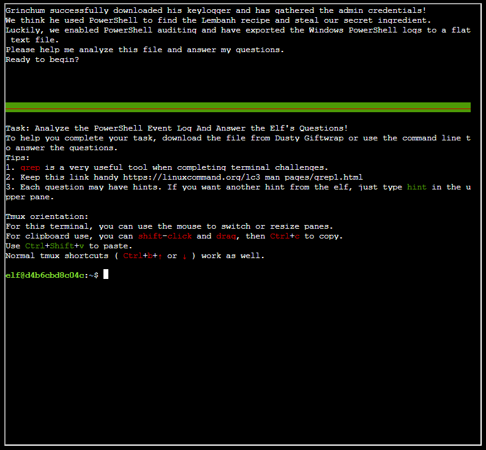

Open the terminal next to Dusty Giftwrap and answer the questions based off of the Windows event log.
Dusty Giftwrap
"Hi! I'm Dusty Giftwrap!"
"We think the Snowrog was attracted to the pungent smell from the baking lembanh."
"I'm trying to discover which ingredient could be causing such a stench."
"I think the answer may be in these suspicious logs."
"I'm focusing on Windows Powershell logs. Do you have much experience there?"
"You can work on this
offline or try it in this terminal."
"Golly, I'd appreciate it if you could take a look."
"..."

Q: What month/day/year did the attack take place? For example, 09/05/2021.
Open the powershell.evtx file with the Windows Event Viewer. You will see that the date of the events is 12/24/2022.
A: 12/24/2022
Q: An attacker got a secret from a file. What was the original file's name?
Using the Find tool, you can search for "Get-Content."
A: Recipe
Q: The contents of the previous file were retrieved, changed, and stored to a variable by the attacker. Submit the full PowerShell line that performed only these actions.
You can step through the events until you find a command that seems to replace something in the file.
A: $foo = Get-Content .\Recipe| % {$_ -replace 'honey', 'fish oil'}
Q: After storing the altered file contents into the variable, the attacker used it to run a separate command that wrote the modified data to a file. Submit the full PowerShell line that performed only this action.
Keep stepping through the events until you find the previously defined "$foo" being used.
A: $foo | Add-Content -Path 'Recipe.txt'
Q: What is the new file's name that was created with the previous command?
A: Recipe.txt
Q: Where any files deleted (Yes/No)?
Keep looking through the events until you find a file being deleted.
A: Yes
Q: Was the original file deleted (Yes/No)?
A: Yes
Q: What is the Event ID of the log that shows the actual command line used to delete the file?
A: 4014
Q: Is the secret ingredient compromised (Yes/No)?
A: Yes
Q: What is the secret ingredient?
A: Honey